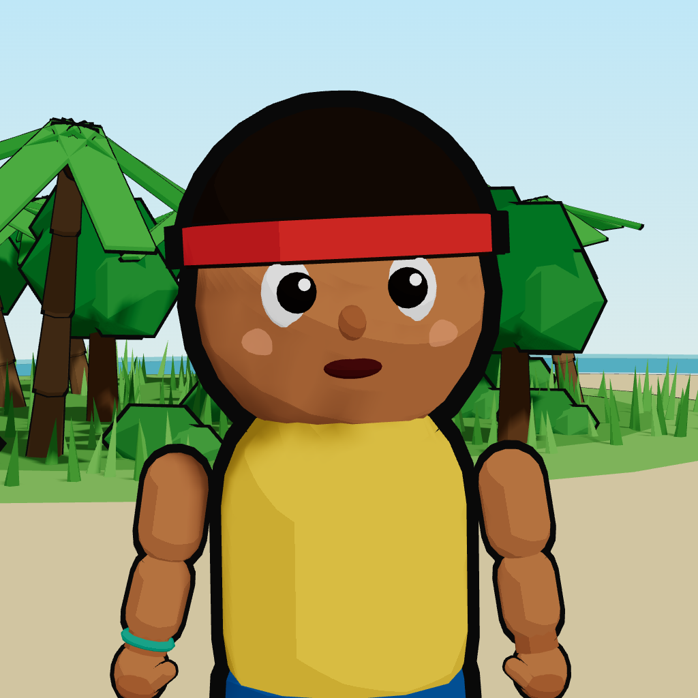

A daily animated series about Damar, who is stranded alone on an island. Every episode ends with two choices, and viewers vote in the comments for what Damar does the next day.
The Pulau Terdampar app is a private tool used only by the creator of this series to upload new episodes to the creator's own TikTok, Instagram, Facebook and YouTube accounts.
Terms of Service · Privacy Policy
Contact: Instagram @pulau.terdampar